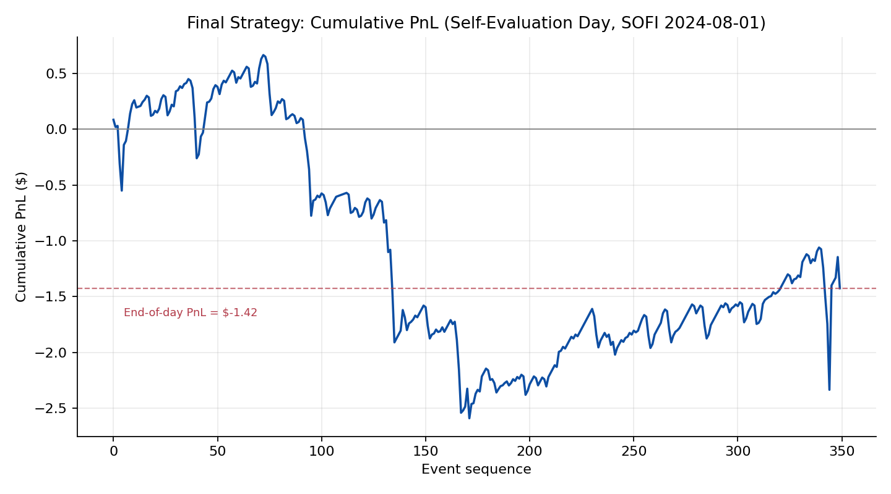
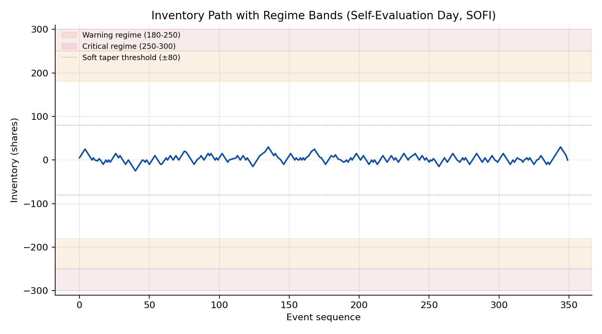

Adaptive Inventory-Aware Market Making on SOFI — AI-Assisted Development
This page documents the market-making assignment from MGMTMFE 412: Trading, Market Frictions, and FinTech at UCLA Anderson: maintain a two-sided quote on SOFI using a callback API (build_strategy → on_market_event / on_fill) against full L3 order-book data, graded on three hidden out-of-sample dates by
\[ \text{Score} = \text{NetPnL} - 0.20\,\overline{\lvert q \rvert} - 50\,(0.30 - \text{two-sided ratio})^{+} - 10\,\text{market orders} - 25\,\text{violations}. \]
As with the other strategies, the code was developed iteratively with Claude (Anthropic): I supplied the assignment brief, the previous week’s code, and the instructor’s feedback, and Claude proposed and implemented the quoting logic, which I then tested locally before submission. All figures below come from the autograder’s summary.json outputs and the instructor’s feedback reports.
Week 7 baseline: a Avellaneda-Stoikov quoter, and where it breaks
The week-7 submission implements a linear inventory-skewed reservation price, \(r = \text{mid} - 0.10 \cdot q \cdot \text{tick}\), quoting 10 shares on each side with a 1-tick half-spread. Its main engineering contribution is a safe-cancel guard — only cancel an order that is provably behind the NBBO (a resting sell above the current ask, or a resting buy below the current bid) — combined with a two-level throttle: Level 1 immediately resubmits only the side that just got filled, while Level 2 refreshes both sides every 150 events. An inventory taper linearly reduces the accumulating side’s size as \(|q|\) grows from 150 to 300 shares.
On the hidden dates this scored an aggregate -301.9, with net PnL of -$180.02, a two-sided quote coverage of only 0.45 (below the 0.30 penalty threshold is fine, but barely), and 1 violation:
| Date | PnL | Drawdown | Score | Fills | Violations |
|---|---|---|---|---|---|
| 2024-12-26 | $58.68 | -$35.09 | 24.72 | 126 | 0 |
| 2025-04-08 | $59.27 | -$161.22 | 22.33 | 291 | 0 |
| 2025-08-26 | -$297.98 | -$307.52 | -348.94 | 857 | 1 |
| Aggregate | -$180.02 | -$307.52 | -301.9 | — | 1 |
The first two dates were fine; 2025-08-26 was a collapse, single-handedly producing nearly all of the aggregate loss and the only violation. The instructor’s review traced this to three compounding issues: the safe-cancel guard prevents race violations but doesn’t address adverse selection — the actual driver of the 2025-08-26 loss; the linear skew term is effectively cosmetic because the inventory taper clamps the position near \(|q|=20\) shares, well before the skew can meaningfully lean the quotes; and the fixed 150-event throttle is blind to the NBBO, so it can both refresh needlessly on a flat market and fail to react quickly enough during a fast move. The review also noted the strategy implements the core AS framework (reservation price, inventory skew, throttle, tapering) but is missing a microprice/OFI signal tilt (it quotes around the simple mid), implied-alpha calibration (SKEW_K=0.10 is hand-picked), endgame flatten logic, and any markout-based toxicity filter — an Innovation score of 78/100 (Framework 19, Signal Quality 17, Originality 22, Implementation 20).
Week 8: six targeted fixes
Rather than a rewrite, week 8 kept the AS skeleton and layered on six changes aimed squarely at the three diagnosed weaknesses:
- Move-gate throttle — the Level-2 refresh now fires only when both 150 events have passed and the NBBO has moved by at least one tick, eliminating churn on flat markets while staying responsive to price moves.
- Stronger, non-cosmetic skew — a regime-dependent
extra_skewadds up to 2 ticks (Warning regime: a fraction of 2 ticks; Critical regime: a flat 2 ticks) on top of the linearSKEW_Kterm, and the inventory clamp that previously bound at \(|q|=20\) was raised from 2 to 4 ticks. - Multi-regime inventory guard — Normal (\(|q|\le180\)), Warning (\(180<|q|\le250\)), and Critical (\(|q|>250\), hard cap at
MAX_INVENTORY=300) each get distinct tapering and quote-sending logic, rather than one linear taper across the whole range. - Microprice reference — the reservation price is now anchored to a queue-weighted microprice, \(\text{microprice} = \frac{P_{\text{ask}} \cdot Q_{\text{bid}} + P_{\text{bid}} \cdot Q_{\text{ask}}}{Q_{\text{bid}} + Q_{\text{ask}}}\), rather than the simple mid — systematically reducing adverse selection.
- Endgame flatten — in the final 7% of the session, the skew multiplier jumps to \(4\times\), aggressively pushing the strategy back toward a flat position before the close.
- Fill-rate monitor + directional fill signal — a 300-event rolling window that widens both sides by 1 tick if 3+ fills occur in the window (a trending-regime detector), plus a directional signal: if 3+ consecutive fills land on the same side, that side’s quote is pushed back by 1 tick — asymmetrically, so the unwinding side stays competitive. The instructor’s review called this “the single most effective adverse-selection defense in the submission.”
| Parameter | Value | Parameter | Value |
|---|---|---|---|
QUOTE_SIZE |
5 | FILL_RATE_WINDOW |
300 |
SOFT_INVENTORY |
80 | FILL_RATE_THRESH |
3 |
NORMAL_INV |
180 | VOL_EXTRA_TICKS |
1 |
CRITICAL_INV |
250 | ENDGAME_PCT |
0.07 |
MAX_INVENTORY |
300 | ENDGAME_SKEW_MULT |
4.0 |
SKEW_K |
0.10 | DIRECTIONAL_THRESH |
3 |
EXTRA_SKEW_TICKS |
2 | DIRECTIONAL_TICKS |
1 |
MIN_EVENTS_BETWEEN_REFRESH |
150 | CANCEL_TICKS |
2 |
A separate change worth calling out on its own: halving QUOTE_SIZE from 10 to 5 shares was, by itself, the single highest-leverage tweak across both weeks, since it directly halves the per-fill adverse-selection exposure that drives the inventory swings on volatile days. One idea that was tried and rejected: posting one tick behind the touch (to reduce fill probability on the wrong side) made things worse on the local self-evaluation day, taking the score from -17.76 to -59.26 — fewer, more lopsided fills hurt more than they helped.
Local self-evaluation (development day, 2024-08-01)
On the development day used for local iteration, the final week-8 strategy posted a net PnL of -$1.42, max drawdown -$3.25, 350 fills across 473 orders, a maker fill ratio of 0.91 (320 maker / 29 taker fills), a mean two-sided quote ratio of 0.73, and zero violations, for a self-eval score of -3.36. The score decomposition is informative: \(-3.36 = (-1.42) - 0.50|q_{\text{end}}| - 0.20\,\overline{|q|}\), with the end-of-day inventory term at zero (the strategy finished flat) and the mean-absolute-inventory penalty contributing the remaining -1.94 — i.e., on this particular day, the strategy’s PnL was nearly break-even and the score was dominated by the cost of simply carrying inventory throughout the session, not by any blow-up.


The inventory path stayed within roughly ±25-30 shares all day — comfortably inside the ±80 soft-taper threshold and nowhere near the Warning (180) or Critical (250) regime boundaries. That’s a useful sanity check on the mechanics (safe-cancel, move-gate, microprice reference all functioning with zero violations), but it also means this particular development day never stress-tested the multi-regime guard, the endgame flatten, or the directional fill signal — those three features only matter on the kind of high-fill-rate, trending day that 2025-08-26 turned out to be in the hidden set.
Limits
The honest summary is: week 8 turned a catastrophic day into a merely bad one, not a good one. 2025-08-26 still loses -$85.79 and is still the single worst day by a wide margin — the directional fill signal helps, but DIRECTIONAL_TICKS=1 may simply be too small a pushback for a market trending 5+ ticks in one direction, and the Critical regime’s response is to pull one side of the quote entirely, causing temporary one-sided dropout that drags the two-sided ratio down to 0.52 (above the 0.30 penalty threshold, but with little room left). The fill-rate monitor also widens both sides symmetrically when the trending-regime trigger fires, which reduces spread capture on the side that’s actually helping the strategy unwind — an avoidable cost. And the aggregate score, while dramatically improved, is still negative (-44.83): this is a strategy that has gotten much less bad, not one that is profitable on a risk-adjusted basis across the hidden set.
The instructor’s suggestions for a further iteration are concrete and worth recording here as the natural next steps: add a markout-based toxicity diagnostic — an EWMA of \(-\text{sign}(\text{fill side})\times(\text{mid}_{t+1s} - \text{fill price})\) — and pause quoting for 10-20 events when it crosses a threshold, rather than only widening; scale DIRECTIONAL_TICKS adaptively (2 ticks at 5+ consecutive same-side fills, pull the accumulating side entirely for 50 events at 7+); make the fill-rate widening asymmetric (apply it only to the side that’s been filling); add hysteresis to the Critical-regime side-pull (restore the pulled side once \(|q|\) drops back below 240, rather than waiting to fully exit Critical); and finally, implement the implied-alpha calibration suggested back in week 7 — fitting SKEW_K from observed NBBO spreads via an inverted AS formula, rather than hand-picking 0.10 — which has now been an open suggestion across both rounds of feedback.